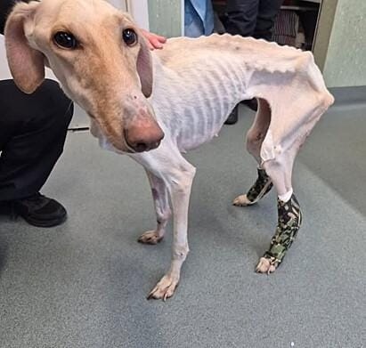

COMO FOI ENCONTRADA

HOJE EM SEGURANÇA
Eu sou a luna 🐶
Luna foi encontrada dentro de um saco, jogada às margens de um rio... [Luna é uma cadela de apenas 2 anos que foi abandonada de forma cruel e covarde por seus antigos donos. Ela foi encontrada dentro de um saco, jogada às margens de um rio, como se a sua vida não tivesse valor. Por sorte, um membro do nosso instituto passava pelo local naquele momento, registrou a situação e fez a denúncia imediatamente. Quando foi resgatada, Luna estava extremamente magra, assustada e com sinais claros de agressão. Marcas que não podem ser mostradas em vídeo, mas que revelam o sofrimento que ela viveu. Mesmo assim, ainda demonstrava algo que só os animais têm: vontade de viver e confiar novamente. Hoje, Luna está em segurança, recebendo cuidados, alimentação e carinho. Mas a recuperação é um processo longo — físico e emocional. E ela não é a única. Todos os dias, milhares de cães no Brasil vivem nas ruas, enfrentando fome, frio, medo e, pior do que tudo, a vulnerabilidade diante de pessoas maldosas e sem compaixão. São vidas invisíveis, que dependem da ajuda de quem ainda acredita que é possível fazer o bem. Ajude a Luna. Faça por ela o que não foi possível fazer pelo Orelha. A sua ajuda permite resgatar, tratar e dar uma nova chance para animais que foram abandonados e feridos. Cada contribuição se transforma em alimento, cuidado, proteção e esperança. Luna precisa de nós. E muitos outros também.]
Ajude a Luna.
Faça por ela o que não foi possível fazer pelo Orelha.
A Luna é um dos nossos protegidos que busca um lar cheio de amor em Xapuri.
Porte: Médio
Idade: 1 anos